FOSS4Gとは
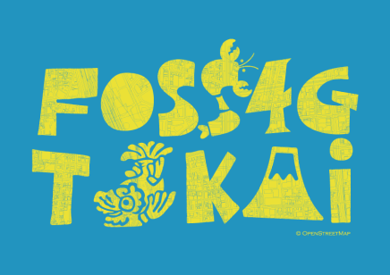
FOSS4GとはFree Open Source Software for GeoSpatialの略であり， オープンソースの地理情報ソフトウェアを指しています．
また，それらを事例紹介や体験学習を通してまなぶイベント名でもあります．
FOSS4Gは国際非営利組織の
OSGeo財団
により支援され， 日本における公式の支部としてOSGeo財団日本支部が活動しています．
FOSS4G TOKAI は東海地方のイベントとして， 2017年にスタートし，今回で4回目の開催となります
行動規範（CODE OF CONDUCT）
FOSS4G TOKAIでは，皆様に心地よく，そして楽しく参加していただけるよう，行動規範を設けています．
私たちは，性別，年齢，性的指向，身体的特徴，人種や職業，思想や信条や生き方，技術力や技術の選択・手法などのさまざまな個人のありかたに対して，ハラスメントを許容しません．
もしハラスメントや侮辱的言動，イベントへの妨害となる行為や周囲を不快にする言動を取った場合，私たちは当該参加者に退出を求めたり，今後の参加をお断りしたり，法的措置をとる場合があります．
私たちは，FOSS4G TOKAIの全ての参加者に対して，行動規範に従うことを求めています． 行動規範の全文は
こちら
のページでご覧ください．
タイムテーブル
詳細なセッション内容は後日公開されます。
また当日は
YouTube
で公開します。開催までの準備配信や過去の動画も公開しています。各会場は下記タイムテーブルのリンクを確認してください。
スピーカー/セッション紹介
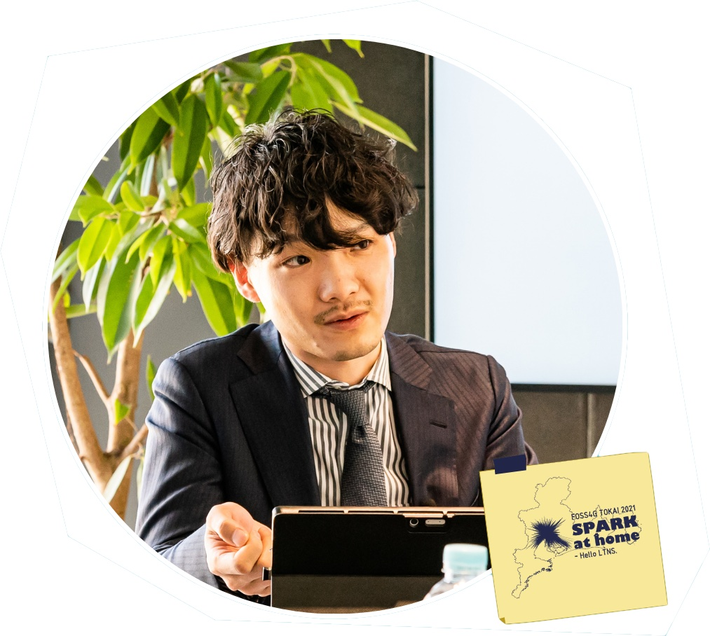
A01 13:10~
３D都市モデルが実現する未来―国土交通省Project PLATEAU
2020年度から始動した国土交通省主導による３D都市モデル整備・活用・オープンデータ化事業Project PLATEAU（プラトー）現実の都市空間をサイバー空間上に再現した３D都市モデルの活用により、精緻なシミュレーションや高度な分析、新たなサービス創出など、新しい価値が生まれつつある。 PLATEAUは今後の地理空間情報の展開にどのような変化をもたらすのか。国土交通省の狙いと今後の取組について講演する。
内山 裕弥(うちやま ゆうや)
国土交通省都市局都市政策課
A02 13:40~
HERE位置情報サービスでCOVIDの課題を解決
HEREは最先端の位置情報プラットフォームで複雑な社会問題の解決に貢献しています。FOSS4G TOKAI 2021 ではHEREの位置情報サービスがどのように新型コロナの解決に貢献しているかをお話しさせてもらいます。
サブリナ チェン/仲井治(さぶりな ちぇん／なかいおさむ)
HERE Japan 株式会社
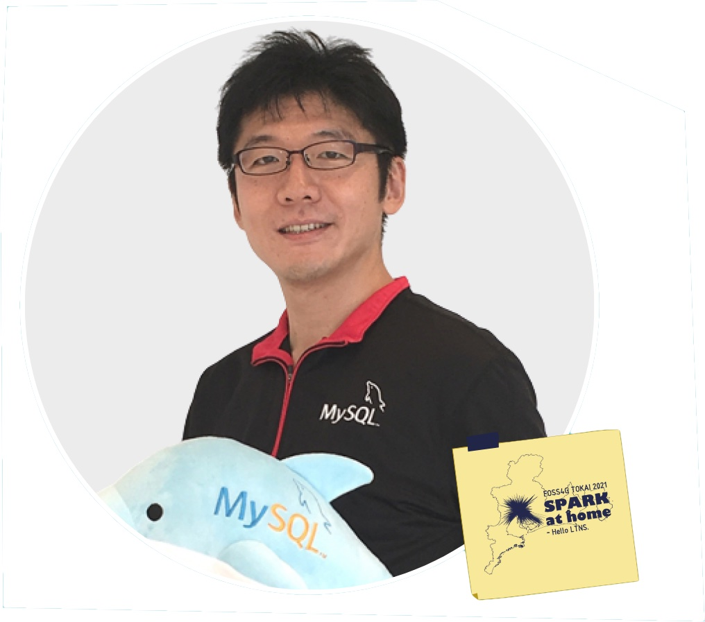
A03 14:00~
MySQL GBU オラクルクラウドがGISと相性がいい理由
地理院地図やトヨタマップマスターの地図制作業務でも採用されているオラクルクラウド。GISを構築＆運用する上で、オラクルクラウドが適している理由についてご説明させて頂きます。
山﨑 由章(やまさき よしあき)
日本オラクル株式会社
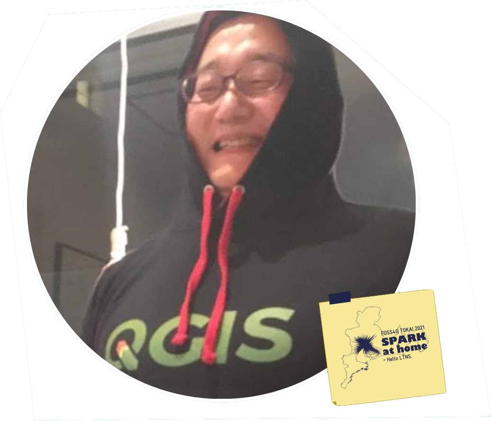
A11 14:35~
FOSS4G Hokkaido 自治体HPにもベクタタイルの時代が来たか！
北海道のホームページではいくつかのページでWebGIS「Leaflet」を活用してオープンデータの可視化を行っています。最近ではQGISで変換したベクタタイルの利用も始まりました。QGISでの変換方法や自治体での活用事例紹介などお話します。
喜多 耕一(きた こういち)
FOSS4G Hokkaido
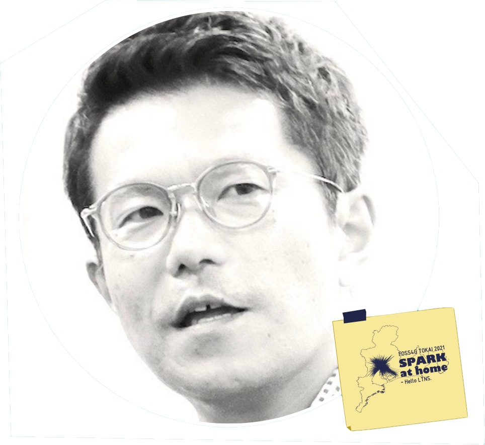
A12 14:55~
静岡県が目指す「VIRTUAL SHIZUOKA構想」とは？
静岡県は点群データで創る仮想県土「VIRTUAL SHIZUOKA」を新たなインフラと位置付け、データの収集・蓄積とオープンデータ化を進めている。熱海の土石流災害の初期対応でどのようにデータが利活用されたのか担当者が解説します。
杉本 直也(すぎもと なおや)
静岡県庁
A13 15:15~
QGISで見る3D点群
近年は写真から3Dモデルを作成するSfM、地上型レーザー計測器による点群取得、はたまた3Dスキャナーを搭載したスマートフォン、Raspberry PIを基盤として自作する3Dスキャナなど、3D点群が身近になってきました。また行政が配布する3D点群などもあります。でも、取得した点群を見たいといった場合にどうします？実はQGISでも3D点群を見る方法があるのです。有償ソフトを使わずに、パブリックドメインソフトだけで描画をする方法を紹介します。
吉中 輝彦(よしなか てるひこ)
FOSS4G TOKAI / ギルド：黎明の調べ
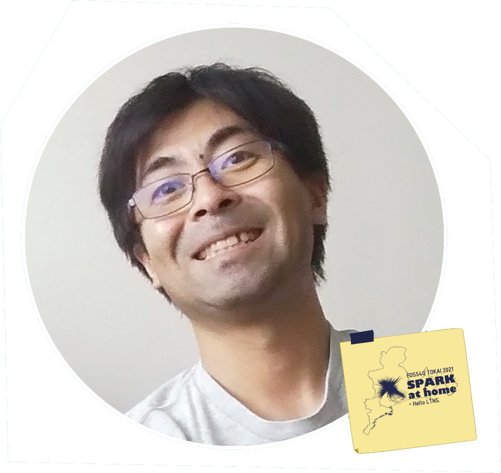
A21 15:50~
「流域治水 × データ」について行ったり来たりしながら考える
流域治水は、みんなで協力して流域全体で豪雨被害を減らそうという取り組みです。その中でオープンなデータの役割はますます重要になってくるはずです。今回は、流域治水周辺の技術やデータについて、1技術者の視点から眺めて考えてみたいと思います。
家田 浩之(いえだ ひろゆき)
民間（建設コンサルタント）
A22 16:10~
リモセンのツボ：よくあるご質問への回答
衛星リモートセンシングデータを利用するにあたり、原理や解析方法などを学ばれる中で出てくる疑問は、かなり共通しているものが多いです。今回はそんなリモセンに関するたくさんの質問から、多くいただくものと特に最近増えてきたものについて、いくつか取り上げて回答いたします。
道下 亮(みちした りょう)
一般財団法人リモート・センシング技術センター
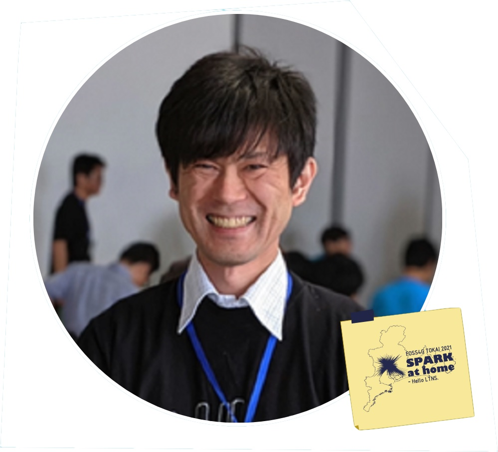
A23 16:30~
物体検出AIと地図上でのマッピング
ドライブレコーダーの動画からAIで物体を検出する取り組みは多く行われています。今回は、AIで検出した結果をマッピングした事例についてお話します。
荒木 光一(あらき こういち)
五大開発株式会社
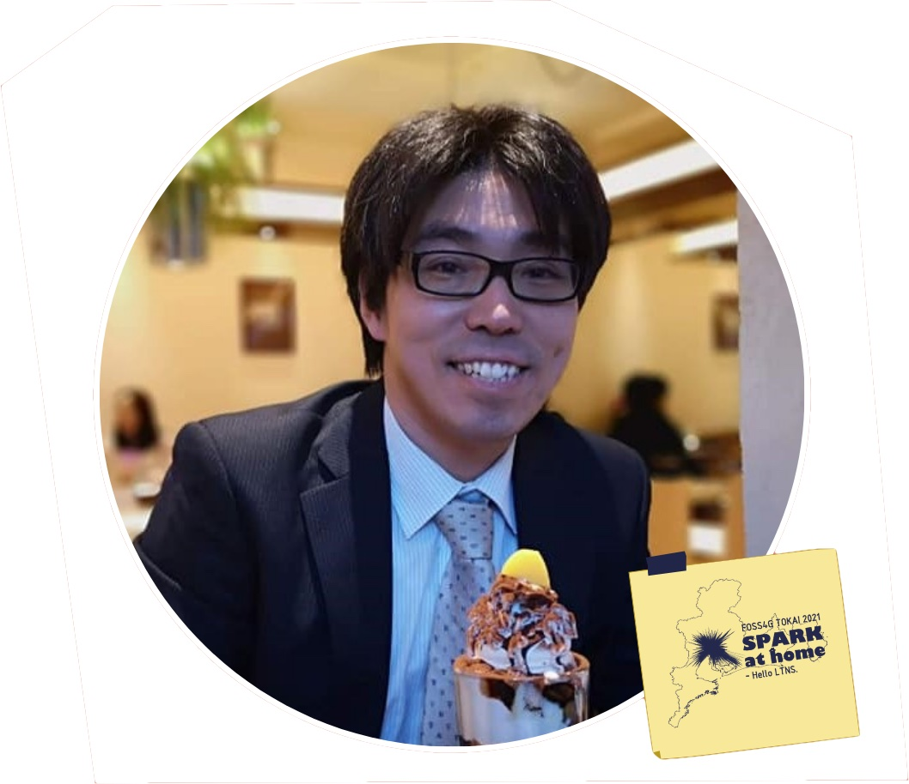
B11 14:35~
国土地理院の標高APIを利用した事故データセットの構築
愛知県警から提供された交通事故のデータに、国土地理院の標高APIを利用して標高（平均海面からの高さ）の情報を加え、事故リスクを分類するためのデータセットを構築する。標高や道路ネットワークの構造から特徴量を算出し、機械学習を利用した事故リスクの分類を試みる。
向 直人(むかい なおと)
椙山女学園大学
B12 14:55~
MapLibreとtile.openstreetmap.jpで始めるベクトル地図プログラミング
Mapboxのプロプライエタリ化によってMapLibreが誕生し、自由な地図プラットフォームが現在も維持されています。今回はMapLibreとそれを活用できるプラットフォームOpenStreetMap Foundation Japanのタイルサーバを紹介します。
Taro Matsuzawa(まつざわ たろう)
Georepublic Japan
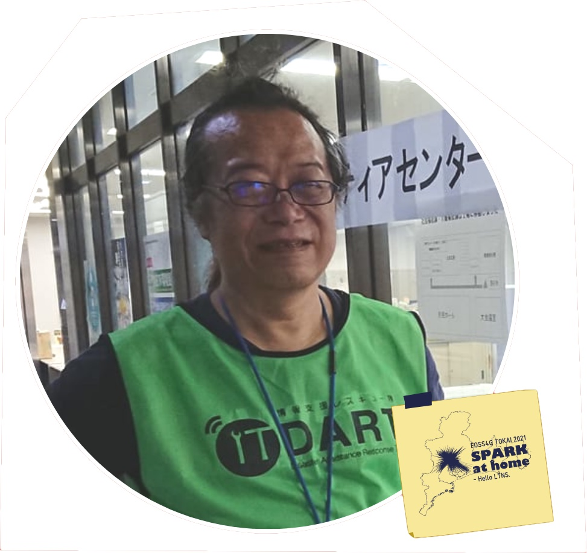
B13 15:15~
スマートフォンを利用した災害時情報収集システムの開発
災害時の情報収集システムとして2019年にLINEのボットを利用した位置情報つきデータ収集システムを構築して運用しました。2019年には災害現場でたくさん利用できましたが2020年携帯基地局が全滅した災害現場では利用できませんでした。そのような場合への対処としてオフラインでも情報収集できるシステムを開発しました。
嘉山 陽一(かやま よういち)
IT DART/OSGeo.JP/朝日航洋株式会社
B21 15:50~
君でも出来る！ジオアプリ開発のススメ
世の中には、様々なFOSS4Gの「大物アプリ」が存在しています。
これらを使いこなすもの良いけど、「自作する」のもFOSS4G的かと思います。
今回は、「小物だけど代替品が少ない」自作アプリの仕組みを紹介することで、 「自分でも作ってみようかな？」と思える発表を目指してみたいと思います。
坂ノ下 勝幸(さかのした かつゆき)
諸国・浪漫/OSMFJ
背景画像プレゼント
セッション・懇親会参加のバーチャル背景に利用できるオリジナル背景画像を配布します。
ご自由にご利用ください。
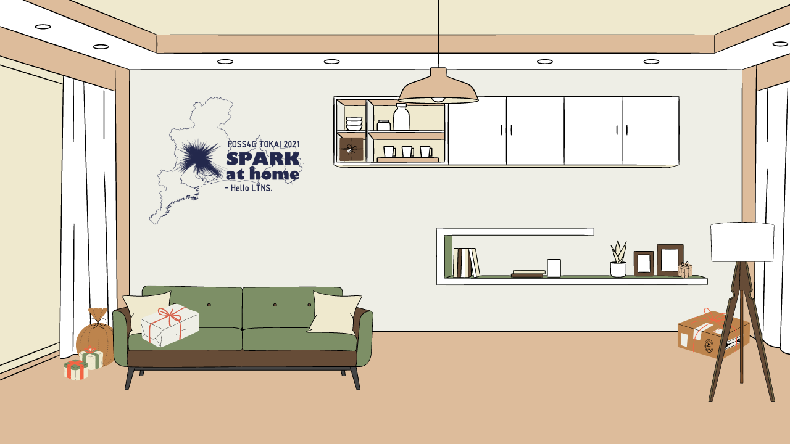
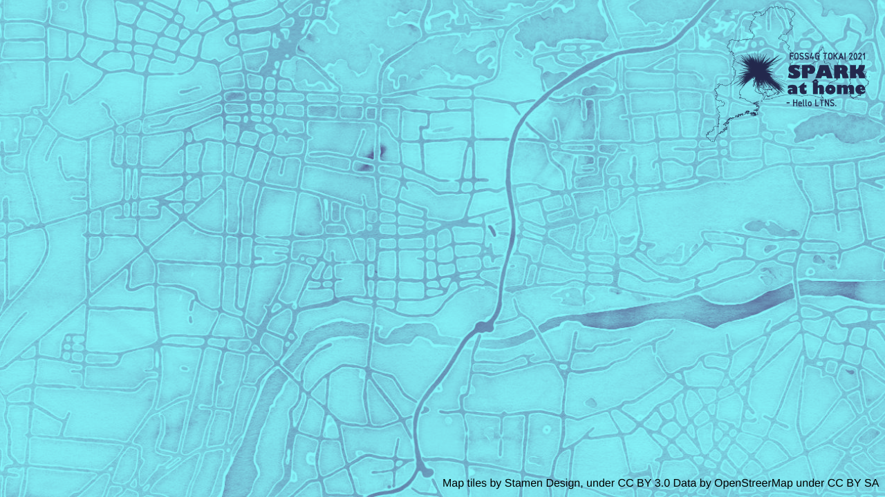
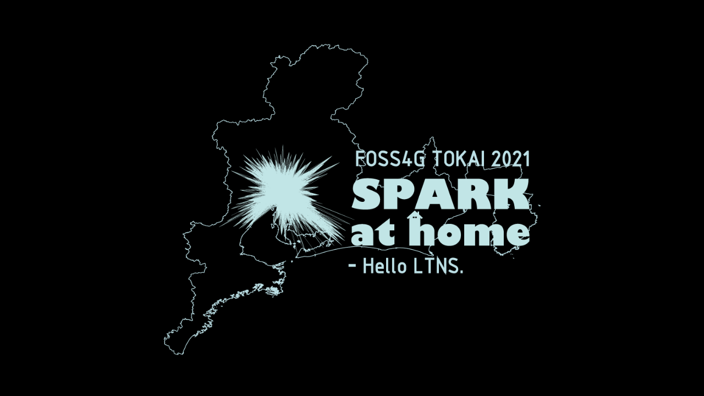
{kind=link}
{kind=link}
{kind=link}